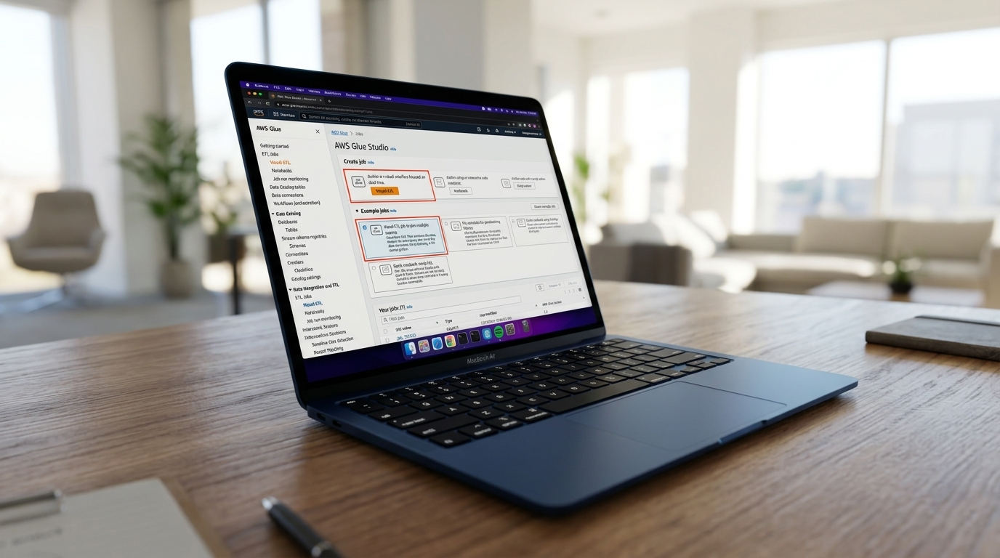
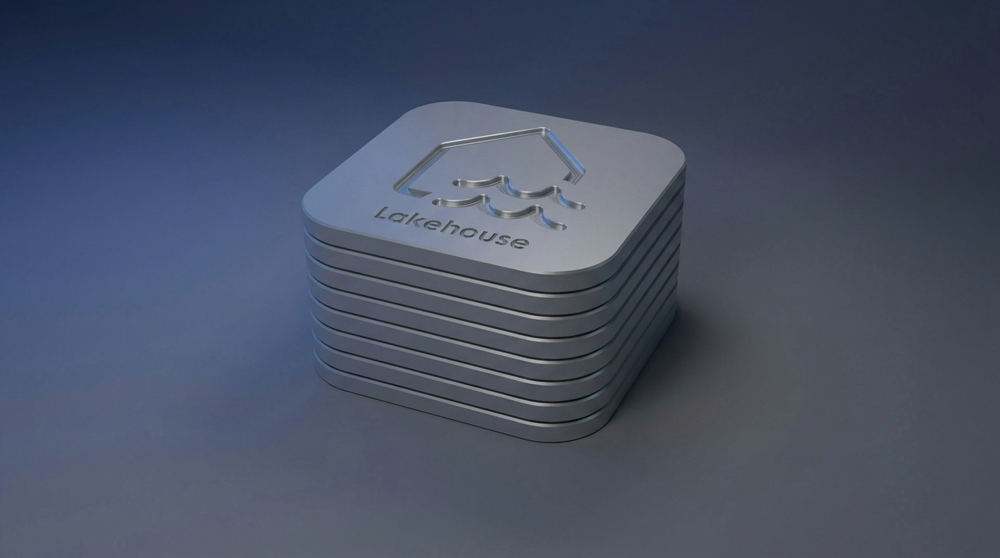
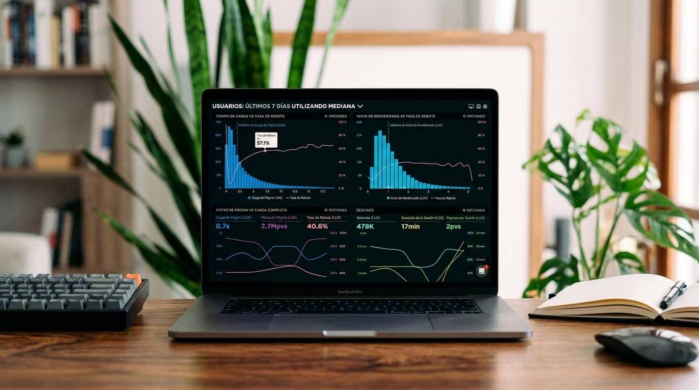
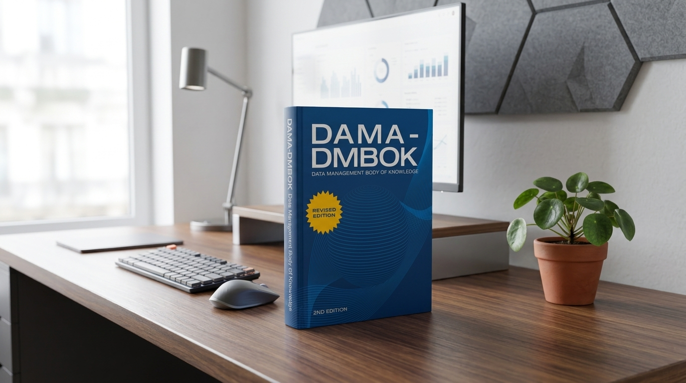
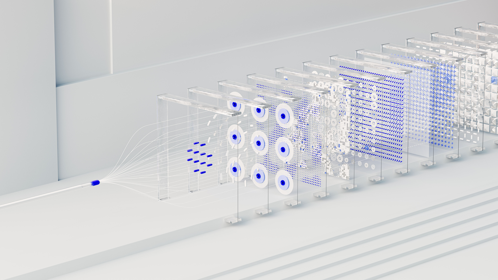
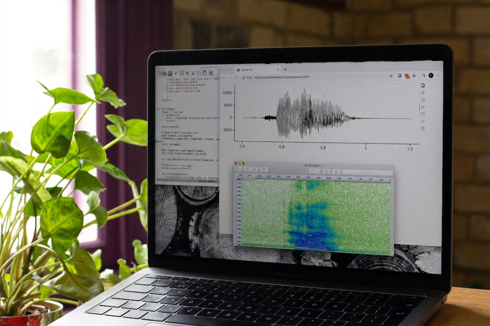

Diseño y automatización de pipelines para integrar, transformar y disponibilizar datos de múltiples fuentes en plataformas analíticas y de negocio.
Stack: Azure Data Factory · Microsoft Fabric · AWS Glue · Azure Databricks · PySpark · Python · SQL
Diseño de modelos de datos, estructuras analíticas y Data Warehouses orientados a rendimiento, escalabilidad y consumo de información.
Stack: Microsoft Fabric · Azure Synapse Analytics · SQL Server · Azure SQL · Amazon Redshift · SQL · Power BI

Implementación de arquitecturas modernas para centralizar, almacenar y procesar grandes volúmenes de datos estructurados y no estructurados.
Stack: Microsoft Fabric · OneLake · Azure Data Lake Storage · Amazon S3 · Azure Databricks · Apache Spark · Delta Lake

Transformación de datos en indicadores, modelos analíticos y tableros interactivos para la toma de decisiones estratégicas y operativas.
Stack: Power BI · DAX · Power Query · Microsoft Fabric · SQL · Azure Synapse Analytics · AWS QuickSight

Implementación de procesos para asegurar la calidad, consistencia, trazabilidad y disponibilidad de los datos durante todo su ciclo de vida.
Stack: Microsoft Fabric · Microsoft Purview · Azure Data Factory · SQL · Python · Power BI

Desarrollo de modelos de machine learning para clasificación, predicción, detección de patrones y generación de insights sobre datos operativos y de negocio.
Stack: Python · Pandas · NumPy · Scikit-learn · XGBoost · Azure Machine Learning · Azure Databricks · PySpark
Aplicación de técnicas de inteligencia artificial y procesamiento de lenguaje natural para extraer información, clasificar contenido y automatizar el análisis de datos.
Stack: Python · Transformers · Hugging Face · Azure AI · Azure OpenAI · NLP · Azure Databricks

Análisis estadístico y desarrollo de soluciones para identificar comportamientos atípicos, tendencias y oportunidades de mejora a partir de grandes volúmenes de datos.
Stack: Python · Pandas · NumPy · Scikit-learn · PySpark · Azure Databricks · Power BI
Integración de fuentes de datos y servicios mediante APIs y procesos automatizados para conectar aplicaciones, plataformas y sistemas empresariales.
Stack: Python · REST APIs · FastAPI · Azure Functions · AWS Lambda · Azure Data Factory · Power Automate · SQL
Este sitio hace parte del perfil profesional de Felipe Tamayo — Ingeniero Electrónico en Automatización, especialista en Datos y candidato a Máster en Ciencia de Datos.
Sobre mi: Tengo experiencia en las áreas de Ingeniería de Datos, Ciencia de Datos y Business Intelligence, participo en proyectos de integración y transformación de datos, construcción de pipelines y Data Warehouses, analítica avanzada, machine learning, automatización y desarrollo de soluciones analíticas sobre ecosistemas Azure y AWS.
Mi modo de trabajo es flexible, sin embargo, normalmente lo hago bajo un enfoque orientado a proyectos, tanto para organizaciones en Colombia como para iniciativas internacionales, colaborando con empresas, equipos multidisciplinarios y clientes bajo diferentes modalidades. También estoy disponible para proyectos independientes y colaborativos incluyendo investigación aplicada, despliegue de soluciones, automatización y asesoría técnica.
Si visitaste el sitio antes y buscas alguno de los proyectos, es posible que encuentres limitado acceso al Git. Debido a la migración de GitLab hacia GitHub se está haciendo una revisión y actualización, posteriormente se estará restableciendo el acceso.
Desarrollo de un sistema basado en procesamiento de lenguaje natural (Hugging Face / FastAPI) para clasificar y analizar el sentimiento de textos no estructurados en tiempo real.
AmpliarDiseño y construcción de una arquitectura Medallion (Bronce, Plata, Oro) utilizando Azure Databricks y Delta Lake para el manejo de más de 100 TB de datos mensuales.
AmpliarOrquestación de flujos de datos complejos integrando múltiples APIs REST con bases de datos y plataformas de BI utilizando Microsoft Fabric y Azure Data Factory.
Ampliar¿Tienes una pregunta o quieres colaborar?
Puedes rellenar el formulario y me pondré en contacto lo mas pronto posible.
L. Felipe Tamayo
+57 (315) 294 9118 | tamayoc.felipe@gmail.com